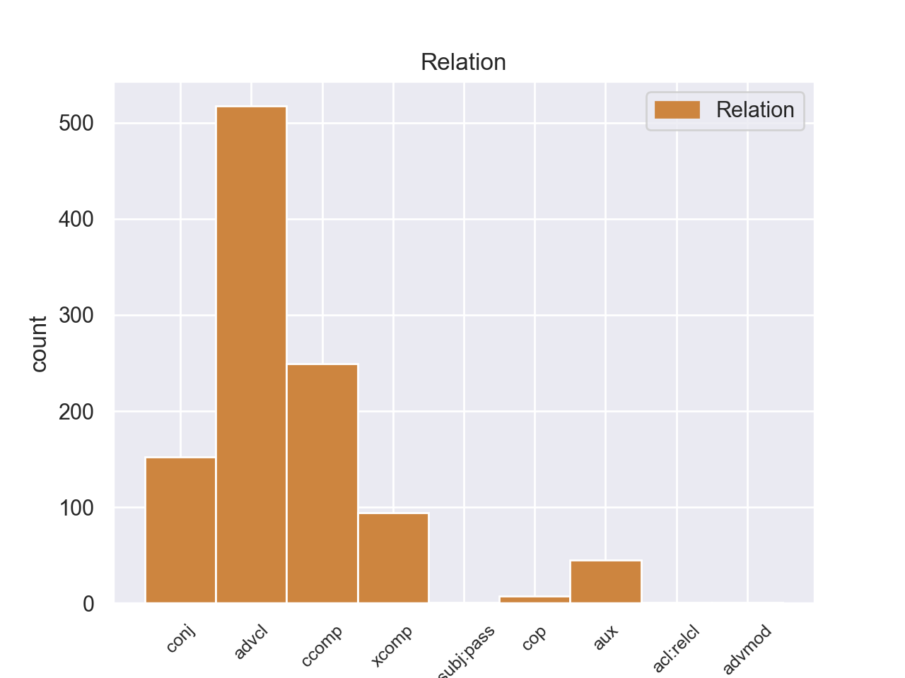
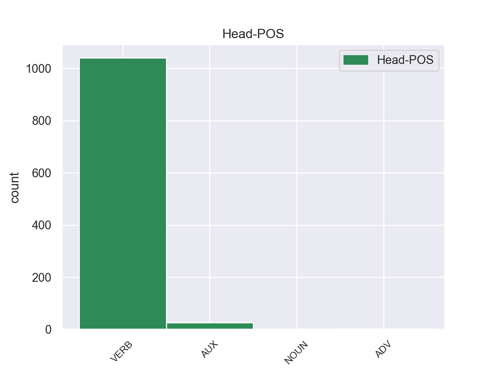

Distribution of features within this leaf



Agreement Rules sorted by frequency.
- When the dependent token is the adverbial clause modifier(advcl) of the head token, and the dependent token is VERB.
1 πρόκειται _ _ _ _ 0 _ _ _
2 για _ _ _ _ 0 _ _ _
3 αυτό _ _ _ _ 0 _ _ _
4 το _ _ _ _ 0 _ _ _
5 οποίο _ _ _ _ 0 _ _ _
6 αποκαλύφθηκε αποκαλύφθηκε VERB _ Aspect=Perf|Mood=Ind|Number=Sing|Person=3|Tense=Past|VerbForm=Fin|Voice=Pass 19 advcl _ _
7 κατά _ _ _ _ 0 _ _ _
8 τη _ _ _ _ 0 _ _ _
9 διάρκεια _ _ _ _ 0 _ _ _
10 αυτής _ _ _ _ 0 _ _ _
11 της _ _ _ _ 0 _ _ _
12 διαδικασίας _ _ _ _ 0 _ _ _
13 , _ _ _ _ 0 _ _ _
14 ότι _ _ _ _ 0 _ _ _
15 ο _ _ _ _ 0 _ _ _
16 Εισαγγελέας _ _ _ _ 0 _ _ _
17 κάποια _ _ _ _ 0 _ _ _
18 στιγμή _ _ _ _ 0 _ _ _
19 ζήτησε ζήτησε VERB _ Aspect=Perf|Mood=Ind|Number=Sing|Person=3|Tense=Past|VerbForm=Fin|Voice=Act 0 _ _ _
20 από _ _ _ _ 0 _ _ _
21 την _ _ _ _ 0 _ _ _
22 Πρόεδρο _ _ _ _ 0 _ _ _
23 του _ _ _ _ 0 _ _ _
24 Σώματος _ _ _ _ 0 _ _ _
25 , _ _ _ _ 0 _ _ _
26 την _ _ _ _ 0 _ _ _
27 προκάτοχό _ _ _ _ 0 _ _ _
28 σας _ _ _ _ 0 _ _ _
29 , _ _ _ _ 0 _ _ _
30 λεπτομέρειες _ _ _ _ 0 _ _ _
31 για _ _ _ _ 0 _ _ _
32 την _ _ _ _ 0 _ _ _
33 ψήφο _ _ _ _ 0 _ _ _
34 που _ _ _ _ 0 _ _ _
35 έχουν _ _ _ _ 0 _ _ _
36 δώσει _ _ _ _ 0 _ _ _
37 οι _ _ _ _ 0 _ _ _
38 δύο _ _ _ _ 0 _ _ _
39 συγκεκριμένοι _ _ _ _ 0 _ _ _
40 βουλευτές _ _ _ _ 0 _ _ _
41 προκειμένου _ _ _ _ 0 _ _ _
42 να _ _ _ _ 0 _ _ _
43 διευκρινιστεί _ _ _ _ 0 _ _ _
44 περαιτέρω _ _ _ _ 0 _ _ _
45 η _ _ _ _ 0 _ _ _
46 πιθανότητα _ _ _ _ 0 _ _ _
47 να _ _ _ _ 0 _ _ _
48 είχαν _ _ _ _ 0 _ _ _
49 ασκήσει _ _ _ _ 0 _ _ _
50 αθέμιτη _ _ _ _ 0 _ _ _
51 επιρροή _ _ _ _ 0 _ _ _
52 . _ _ _ _ 0 _ _ _
1 Υπάρχει υπάρχει VERB _ Aspect=Imp|Mood=Ind|Number=Sing|Person=3|Tense=Pres|VerbForm=Fin|Voice=Act 0 _ _ _
2 μια _ _ _ _ 0 _ _ _
3 άλλη _ _ _ _ 0 _ _ _
4 πλευρά _ _ _ _ 0 _ _ _
5 της _ _ _ _ 0 _ _ _
6 υπόθεσης _ _ _ _ 0 _ _ _
7 , _ _ _ _ 0 _ _ _
8 η _ _ _ _ 0 _ _ _
9 οποία _ _ _ _ 0 _ _ _
10 , _ _ _ _ 0 _ _ _
11 δυστυχώς _ _ _ _ 0 _ _ _
12 , _ _ _ _ 0 _ _ _
13 γεννά _ _ _ _ 0 _ _ _
14 την _ _ _ _ 0 _ _ _
15 υποψία _ _ _ _ 0 _ _ _
16 ότι _ _ _ _ 0 _ _ _
17 η _ _ _ _ 0 _ _ _
18 πρόνοια _ _ _ _ 0 _ _ _
19 σχετικά _ _ _ _ 0 _ _ _
20 με _ _ _ _ 0 _ _ _
21 τις _ _ _ _ 0 _ _ _
22 προϋποθέσεις _ _ _ _ 0 _ _ _
23 ελεύθερης _ _ _ _ 0 _ _ _
24 διεξαγωγής _ _ _ _ 0 _ _ _
25 του _ _ _ _ 0 _ _ _
26 κοινοβουλευτικού _ _ _ _ 0 _ _ _
27 έργου _ _ _ _ 0 _ _ _
28 δεν _ _ _ _ 0 _ _ _
29 απασχόλησε απασχόλησε VERB _ Aspect=Imp|Mood=Ind|Number=Sing|Person=3|Tense=Pres|VerbForm=Fin|Voice=Act 1 ccomp _ _
30 επαρκώς _ _ _ _ 0 _ _ _
31 την _ _ _ _ 0 _ _ _
32 εισαγγελική _ _ _ _ 0 _ _ _
33 αρχή _ _ _ _ 0 _ _ _
34 : _ _ _ _ 0 _ _ _
1 Έχουμε έχουμε VERB _ Aspect=Imp|Mood=Ind|Number=Sing|Person=1|Tense=Pres|VerbForm=Fin|Voice=Act 0 _ _ _
2 την _ _ _ _ 0 _ _ _
3 απαρέγκλιτη _ _ _ _ 0 _ _ _
4 αρχή _ _ _ _ 0 _ _ _
5 να _ _ _ _ 0 _ _ _
6 μην _ _ _ _ 0 _ _ _
7 διαμορφώνουμε _ _ _ _ 0 _ _ _
8 οποιαδήποτε _ _ _ _ 0 _ _ _
9 γνώμη _ _ _ _ 0 _ _ _
10 σχετικά _ _ _ _ 0 _ _ _
11 με _ _ _ _ 0 _ _ _
12 την _ _ _ _ 0 _ _ _
13 ουσία _ _ _ _ 0 _ _ _
14 των _ _ _ _ 0 _ _ _
15 κατηγοριών _ _ _ _ 0 _ _ _
16 , _ _ _ _ 0 _ _ _
17 αλλά _ _ _ _ 0 _ _ _
18 να _ _ _ _ 0 _ _ _
19 θεωρούμε θεωρούμε VERB _ Aspect=Imp|Mood=Ind|Number=Sing|Person=1|Tense=Pres|VerbForm=Fin|Voice=Act 1 conj _ _
20 ότι _ _ _ _ 0 _ _ _
21 οι _ _ _ _ 0 _ _ _
22 βουλευτές _ _ _ _ 0 _ _ _
23 απολαύουν _ _ _ _ 0 _ _ _
24 του _ _ _ _ 0 _ _ _
25 τεκμηρίου _ _ _ _ 0 _ _ _
26 της _ _ _ _ 0 _ _ _
27 αθωότητας _ _ _ _ 0 _ _ _
28 . _ _ _ _ 0 _ _ _
1 Αυτό _ _ _ _ 0 _ _ _
2 μπορεί μπορεί AUX _ Aspect=Imp|Mood=Ind|Number=Sing|Person=3|Tense=Pres|VerbForm=Fin|Voice=Act 0 _ _ _
3 να _ _ _ _ 0 _ _ _
4 μην _ _ _ _ 0 _ _ _
5 οδηγήσει οδηγήσει VERB _ Aspect=Imp|Mood=Ind|Number=Plur|Person=3|Tense=Pres|VerbForm=Fin|Voice=Act 2 xcomp _ _
6 σ _ _ _ _ 0 _ _ _
7 τη _ _ _ _ 0 _ _ _
8 λήξη _ _ _ _ 0 _ _ _
9 του _ _ _ _ 0 _ _ _
10 εν _ _ _ _ 0 _ _ _
11 λόγω _ _ _ _ 0 _ _ _
12 ζητήματος _ _ _ _ 0 _ _ _
13 αλλά _ _ _ _ 0 _ _ _
14 , _ _ _ _ 0 _ _ _
15 σ _ _ _ _ 0 _ _ _
16 τη _ _ _ _ 0 _ _ _
17 μορφή _ _ _ _ 0 _ _ _
18 υπό _ _ _ _ 0 _ _ _
19 την _ _ _ _ 0 _ _ _
20 οποία _ _ _ _ 0 _ _ _
21 την _ _ _ _ 0 _ _ _
22 λάβαμε _ _ _ _ 0 _ _ _
23 , _ _ _ _ 0 _ _ _
24 αυτή _ _ _ _ 0 _ _ _
25 η _ _ _ _ 0 _ _ _
26 αίτηση _ _ _ _ 0 _ _ _
27 άρσης _ _ _ _ 0 _ _ _
28 της _ _ _ _ 0 _ _ _
29 ασυλίας _ _ _ _ 0 _ _ _
30 ήταν _ _ _ _ 0 _ _ _
31 , _ _ _ _ 0 _ _ _
32 κατά _ _ _ _ 0 _ _ _
33 την _ _ _ _ 0 _ _ _
34 άποψη _ _ _ _ 0 _ _ _
35 της _ _ _ _ 0 _ _ _
36 Επιτροπής _ _ _ _ 0 _ _ _
37 Νομικών _ _ _ _ 0 _ _ _
38 Θεμάτων _ _ _ _ 0 _ _ _
39 , _ _ _ _ 0 _ _ _
40 απαράδεκτη _ _ _ _ 0 _ _ _
41 , _ _ _ _ 0 _ _ _
42 άποψη _ _ _ _ 0 _ _ _
43 την _ _ _ _ 0 _ _ _
44 οποία _ _ _ _ 0 _ _ _
45 συνιστώ _ _ _ _ 0 _ _ _
46 σ _ _ _ _ 0 _ _ _
47 το _ _ _ _ 0 _ _ _
48 Σώμα _ _ _ _ 0 _ _ _
49 να _ _ _ _ 0 _ _ _
50 υιοθετήσει _ _ _ _ 0 _ _ _
51 . _ _ _ _ 0 _ _ _
1 Τόσο _ _ _ _ 0 _ _ _
2 το _ _ _ _ 0 _ _ _
3 ζήτημα _ _ _ _ 0 _ _ _
4 της _ _ _ _ 0 _ _ _
5 ασυλίας _ _ _ _ 0 _ _ _
6 όσο _ _ _ _ 0 _ _ _
7 και _ _ _ _ 0 _ _ _
8 η _ _ _ _ 0 _ _ _
9 αίτηση _ _ _ _ 0 _ _ _
10 για _ _ _ _ 0 _ _ _
11 άρση _ _ _ _ 0 _ _ _
12 της _ _ _ _ 0 _ _ _
13 έχουν έχοω VERB _ Aspect=Imp|Mood=Ind|Number=Sing|Person=3|Tense=Pres|VerbForm=Fin|Voice=Act 0 _ _ _
14 σχέση _ _ _ _ 0 _ _ _
15 μόνο _ _ _ _ 0 _ _ _
16 με _ _ _ _ 0 _ _ _
17 το _ _ _ _ 0 _ _ _
18 εάν _ _ _ _ 0 _ _ _
19 το _ _ _ _ 0 _ _ _
20 Δικαστήριο _ _ _ _ 0 _ _ _
21 μπορεί μπορώ VERB _ Aspect=Imp|Mood=Ind|Number=Sing|Person=3|Tense=Pres|VerbForm=Fin|Voice=Act 13 aux _ _
22 να _ _ _ _ 0 _ _ _
23 εκδώσει _ _ _ _ 0 _ _ _
24 δεσμευτικά _ _ _ _ 0 _ _ _
25 βουλεύματα _ _ _ _ 0 _ _ _
26 για _ _ _ _ 0 _ _ _
27 τον _ _ _ _ 0 _ _ _
28 περιορισμό _ _ _ _ 0 _ _ _
29 της _ _ _ _ 0 _ _ _
30 ελεύθερης _ _ _ _ 0 _ _ _
31 μετακίνησης _ _ _ _ 0 _ _ _
32 των _ _ _ _ 0 _ _ _
33 βουλευτών _ _ _ _ 0 _ _ _
34 του _ _ _ _ 0 _ _ _
35 Ευρωπαϊκού _ _ _ _ 0 _ _ _
36 Κοινοβουλίου _ _ _ _ 0 _ _ _
37 ή _ _ _ _ 0 _ _ _
38 την _ _ _ _ 0 _ _ _
39 ελευθερία _ _ _ _ 0 _ _ _
40 τους _ _ _ _ 0 _ _ _
41 να _ _ _ _ 0 _ _ _
42 έρχονται _ _ _ _ 0 _ _ _
43 σε _ _ _ _ 0 _ _ _
44 επικοινωνία _ _ _ _ 0 _ _ _
45 με _ _ _ _ 0 _ _ _
46 άλλα _ _ _ _ 0 _ _ _
47 πρόσωπα _ _ _ _ 0 _ _ _
48 . _ _ _ _ 0 _ _ _
1 Το _ _ _ _ 0 _ _ _
2 Μακεδονικό _ _ _ _ 0 _ _ _
3 απασχόλησε _ _ _ _ 0 _ _ _
4 και _ _ _ _ 0 _ _ _
5 την _ _ _ _ 0 _ _ _
6 Β' _ _ _ _ 0 _ _ _
7 Διεθνή _ _ _ _ 0 _ _ _
8 , _ _ _ _ 0 _ _ _
9 η _ _ _ _ 0 _ _ _
10 οποία _ _ _ _ 0 _ _ _
11 υποστήριξε υποστήριξε VERB _ Aspect=Perf|Mood=Ind|Number=Sing|Person=3|Tense=Past|VerbForm=Fin|Voice=Act 0 _ _ _
12 τη _ _ _ _ 0 _ _ _
13 δημιουργία _ _ _ _ 0 _ _ _
14 ενός _ _ _ _ 0 _ _ _
15 ανεξάρτητου _ _ _ _ 0 _ _ _
16 μακεδονικού _ _ _ _ 0 _ _ _
17 κράτους _ _ _ _ 0 _ _ _
18 , _ _ _ _ 0 _ _ _
19 κάτι _ _ _ _ 0 _ _ _
20 το _ _ _ _ 0 _ _ _
21 οποίο _ _ _ _ 0 _ _ _
22 δεν _ _ _ _ 0 _ _ _
23 έγινε έγινε VERB _ Aspect=Perf|Mood=Ind|Number=Sing|Person=3|Tense=Past|VerbForm=Fin|Voice=Pass 11 cop _ _
24 αφού _ _ _ _ 0 _ _ _
25 μετά _ _ _ _ 0 _ _ _
26 τους _ _ _ _ 0 _ _ _
27 πολέμους _ _ _ _ 0 _ _ _
28 και _ _ _ _ 0 _ _ _
29 την _ _ _ _ 0 _ _ _
30 ανταλλαγή _ _ _ _ 0 _ _ _
31 πληθυσμού _ _ _ _ 0 _ _ _
32 του _ _ _ _ 0 _ _ _
33 1923 _ _ _ _ 0 _ _ _
34 , _ _ _ _ 0 _ _ _
35 το _ _ _ _ 0 _ _ _
36 ελληνικό _ _ _ _ 0 _ _ _
37 στοιχείο _ _ _ _ 0 _ _ _
38 αποτελούσε _ _ _ _ 0 _ _ _
39 πλέον _ _ _ _ 0 _ _ _
40 τη _ _ _ _ 0 _ _ _
41 συντριπτική _ _ _ _ 0 _ _ _
42 πλειοψηφία _ _ _ _ 0 _ _ _
43 του _ _ _ _ 0 _ _ _
44 μακεδονικού _ _ _ _ 0 _ _ _
45 πληθυσμού _ _ _ _ 0 _ _ _
46 και _ _ _ _ 0 _ _ _
47 έτσι _ _ _ _ 0 _ _ _
48 το _ _ _ _ 0 _ _ _
49 μεγαλύτερο _ _ _ _ 0 _ _ _
50 μέρος _ _ _ _ 0 _ _ _
51 της _ _ _ _ 0 _ _ _
52 Μακεδονίας _ _ _ _ 0 _ _ _
53 ενσωματώθηκε _ _ _ _ 0 _ _ _
54 σ _ _ _ _ 0 _ _ _
55 την _ _ _ _ 0 _ _ _
56 Ελλάδα _ _ _ _ 0 _ _ _
57 , _ _ _ _ 0 _ _ _
58 ένα _ _ _ _ 0 _ _ _
59 μικρό _ _ _ _ 0 _ _ _
60 μέρος _ _ _ _ 0 _ _ _
61 σ _ _ _ _ 0 _ _ _
62 τη _ _ _ _ 0 _ _ _
63 Βουλγαρία _ _ _ _ 0 _ _ _
64 και _ _ _ _ 0 _ _ _
65 το _ _ _ _ 0 _ _ _
66 υπόλοιπο _ _ _ _ 0 _ _ _
67 σ _ _ _ _ 0 _ _ _
68 τη _ _ _ _ 0 _ _ _
69 Σερβία _ _ _ _ 0 _ _ _
70 . _ _ _ _ 0 _ _ _
1 Εφόσον _ _ _ _ 0 _ _ _
2 , _ _ _ _ 0 _ _ _
3 κύριε _ _ _ _ 0 _ _ _
4 Επίτροπε _ _ _ _ 0 _ _ _
5 , _ _ _ _ 0 _ _ _
6 σ _ _ _ _ 0 _ _ _
7 τα _ _ _ _ 0 _ _ _
8 κράτη _ _ _ _ 0 _ _ _
9 μέλη _ _ _ _ 0 _ _ _
10 - _ _ _ _ 0 _ _ _
11 και _ _ _ _ 0 _ _ _
12 γνωρίζω _ _ _ _ 0 _ _ _
13 ότι _ _ _ _ 0 _ _ _
14 αυτό _ _ _ _ 0 _ _ _
15 δεν _ _ _ _ 0 _ _ _
16 αποτελεί _ _ _ _ 0 _ _ _
17 δική _ _ _ _ 0 _ _ _
18 σας _ _ _ _ 0 _ _ _
19 αρμοδιότητα _ _ _ _ 0 _ _ _
20 - _ _ _ _ 0 _ _ _
21 ισχύουν _ _ _ _ 0 _ _ _
22 διαφορετικές _ _ _ _ 0 _ _ _
23 προδιαγραφές _ _ _ _ 0 _ _ _
24 για _ _ _ _ 0 _ _ _
25 τον _ _ _ _ 0 _ _ _
26 αριθμό _ _ _ _ 0 _ _ _
27 χιλιομέτρων _ _ _ _ 0 _ _ _
28 ανά _ _ _ _ 0 _ _ _
29 ώρα _ _ _ _ 0 _ _ _
30 που _ _ _ _ 0 _ _ _
31 επιτρέπεται επιτρέπω VERB VERB Aspect=Imp|Mood=Ind|Number=Sing|Person=3|Tense=Pres|VerbForm=Fin|Voice=Pass 0 _ _ _
32 να _ _ _ _ 0 _ _ _
33 οδηγεί οδηγώ VERB VERB Aspect=Imp|Mood=Ind|Number=Sing|Person=3|Tense=Pres|VerbForm=Fin|Voice=Act 31 csubj:pass _ _
34 ένας _ _ _ _ 0 _ _ _
35 οδηγός _ _ _ _ 0 _ _ _
36 , _ _ _ _ 0 _ _ _
37 όλα _ _ _ _ 0 _ _ _
38 αυτά _ _ _ _ 0 _ _ _
39 δεν _ _ _ _ 0 _ _ _
40 θα _ _ _ _ 0 _ _ _
41 έχουν _ _ _ _ 0 _ _ _
42 κανένα _ _ _ _ 0 _ _ _
43 νόημα _ _ _ _ 0 _ _ _
44 . _ _ _ _ 0 _ _ _
1 Με _ _ _ _ 0 _ _ _
2 την _ _ _ _ 0 _ _ _
3 Αργεντινή _ _ _ _ 0 _ _ _
4 οι _ _ _ _ 0 _ _ _
5 Ευρωπαίοι _ _ _ _ 0 _ _ _
6 έχουμε _ _ _ _ 0 _ _ _
7 ιστορικούς _ _ _ _ 0 _ _ _
8 δεσμούς _ _ _ _ 0 _ _ _
9 και _ _ _ _ 0 _ _ _
10 χρέη χρέη NOUN _ Aspect=Perf|Mood=Ind|Number=Plur|Person=3|Tense=Past|VerbForm=Fin|Voice=Act 0 _ _ _
11 έναντι _ _ _ _ 0 _ _ _
12 όσων _ _ _ _ 0 _ _ _
13 κατέφυγαν κατέφυγαν VERB _ Aspect=Perf|Mood=Ind|Number=Plur|Person=3|Tense=Past|VerbForm=Fin|Voice=Act 10 acl:relcl _ _
14 εκεί _ _ _ _ 0 _ _ _
15 για _ _ _ _ 0 _ _ _
16 να _ _ _ _ 0 _ _ _
17 γλιτώσουν _ _ _ _ 0 _ _ _
18 από _ _ _ _ 0 _ _ _
19 την _ _ _ _ 0 _ _ _
20 πείνα _ _ _ _ 0 _ _ _
21 ή _ _ _ _ 0 _ _ _
22 την _ _ _ _ 0 _ _ _
23 καταπίεση _ _ _ _ 0 _ _ _
24 . _ _ _ _ 0 _ _ _
Disagree Examples:
1 Με _ _ _ _ 0 _ _ _
2 κατηγόρησαν _ _ _ _ 0 _ _ _
3 ότι _ _ _ _ 0 _ _ _
4 συμφώνησα συμφωνώ VERB VERB Aspect=Perf|Mood=Ind|Number=Sing|Person=1|Tense=Past|VerbForm=Fin|Voice=Act 0 _ _ _
5 όσον _ _ _ _ 0 _ _ _
6 αφορά αφορώ VERB VERB Aspect=Imp|Mood=Ind|Number=Sing|Person=3|Tense=Pres|VerbForm=Fin|Voice=Act 4 advcl _ _
7 σ _ _ _ _ 0 _ _ _
8 το _ _ _ _ 0 _ _ _
9 ευρωπαϊκό _ _ _ _ 0 _ _ _
10 ένταλμα _ _ _ _ 0 _ _ _
11 συλλήψεως _ _ _ _ 0 _ _ _
12 , _ _ _ _ 0 _ _ _
13 τη _ _ _ _ 0 _ _ _
14 στιγμή _ _ _ _ 0 _ _ _
15 που _ _ _ _ 0 _ _ _
16 υποστηρίζω _ _ _ _ 0 _ _ _
17 σθεναρά _ _ _ _ 0 _ _ _
18 τα _ _ _ _ 0 _ _ _
19 ατομικά _ _ _ _ 0 _ _ _
20 δικαιώματα _ _ _ _ 0 _ _ _
21 . _ _ _ _ 0 _ _ _
1 Η _ _ _ _ 0 _ _ _
2 Ρωσία _ _ _ _ 0 _ _ _
3 δήλωσε δηλώνω VERB VERB Aspect=Perf|Mood=Ind|Number=Sing|Person=3|Tense=Past|VerbForm=Fin|Voice=Act 0 _ _ _
4 ότι _ _ _ _ 0 _ _ _
5 τάσσεται τάσσω VERB VERB Aspect=Imp|Mood=Ind|Number=Sing|Person=3|Tense=Pres|VerbForm=Fin|Voice=Pass 3 ccomp _ _
6 κατά _ _ _ _ 0 _ _ _
7 του _ _ _ _ 0 _ _ _
8 νέου _ _ _ _ 0 _ _ _
9 σχεδίου _ _ _ _ 0 _ _ _
10 του _ _ _ _ 0 _ _ _
11 Συμβουλίου _ _ _ _ 0 _ _ _
12 Ασφαλείας _ _ _ _ 0 _ _ _
13 του _ _ _ _ 0 _ _ _
14 ΟΗΕ _ _ _ _ 0 _ _ _
15 για _ _ _ _ 0 _ _ _
16 τη _ _ _ _ 0 _ _ _
17 Συρία _ _ _ _ 0 _ _ _
18 , _ _ _ _ 0 _ _ _
19 καθώς _ _ _ _ 0 _ _ _
20 δεν _ _ _ _ 0 _ _ _
21 το _ _ _ _ 0 _ _ _
22 θεωρεί _ _ _ _ 0 _ _ _
23 ισορροπημένο _ _ _ _ 0 _ _ _
24 . _ _ _ _ 0 _ _ _
1 Εφεξής _ _ _ _ 0 _ _ _
2 πρέπει _ _ _ _ 0 _ _ _
3 όλοι _ _ _ _ 0 _ _ _
4 να _ _ _ _ 0 _ _ _
5 διορίζονται διορίζω VERB VERB Aspect=Imp|Mood=Ind|Number=Plur|Person=3|Tense=Pres|VerbForm=Fin|Voice=Pass 0 _ _ _
6 και _ _ _ _ 0 _ _ _
7 να _ _ _ _ 0 _ _ _
8 προωθούνται _ _ _ _ 0 _ _ _
9 σύμφωνα _ _ _ _ 0 _ _ _
10 με _ _ _ _ 0 _ _ _
11 τα _ _ _ _ 0 _ _ _
12 προσόντα _ _ _ _ 0 _ _ _
13 τους _ _ _ _ 0 _ _ _
14 , _ _ _ _ 0 _ _ _
15 και _ _ _ _ 0 _ _ _
16 σ _ _ _ _ 0 _ _ _
17 την _ _ _ _ 0 _ _ _
18 περίπτωση _ _ _ _ 0 _ _ _
19 του _ _ _ _ 0 _ _ _
20 Κοινοβουλίου _ _ _ _ 0 _ _ _
21 , _ _ _ _ 0 _ _ _
22 και _ _ _ _ 0 _ _ _
23 θα _ _ _ _ 0 _ _ _
24 μπορούσαμε μπορώ VERB VERB Aspect=Imp|Mood=Ind|Number=Plur|Person=1|Tense=Past|VerbForm=Fin|Voice=Act 5 conj _ _
25 να _ _ _ _ 0 _ _ _
26 κάνουμε _ _ _ _ 0 _ _ _
27 μια _ _ _ _ 0 _ _ _
28 νέα _ _ _ _ 0 _ _ _
29 αρχή _ _ _ _ 0 _ _ _
30 με _ _ _ _ 0 _ _ _
31 τους _ _ _ _ 0 _ _ _
32 ανθρώπους _ _ _ _ 0 _ _ _
33 που _ _ _ _ 0 _ _ _
34 θα _ _ _ _ 0 _ _ _
35 προσληφθούν _ _ _ _ 0 _ _ _
36 τώρα _ _ _ _ 0 _ _ _
37 από _ _ _ _ 0 _ _ _
38 τις _ _ _ _ 0 _ _ _
39 υποψήφιες _ _ _ _ 0 _ _ _
40 χώρες _ _ _ _ 0 _ _ _
41 . _ _ _ _ 0 _ _ _
1 Εφεξής _ _ _ _ 0 _ _ _
2 πρέπει _ _ _ _ 0 _ _ _
3 όλοι _ _ _ _ 0 _ _ _
4 να _ _ _ _ 0 _ _ _
5 διορίζονται _ _ _ _ 0 _ _ _
6 και _ _ _ _ 0 _ _ _
7 να _ _ _ _ 0 _ _ _
8 προωθούνται _ _ _ _ 0 _ _ _
9 σύμφωνα _ _ _ _ 0 _ _ _
10 με _ _ _ _ 0 _ _ _
11 τα _ _ _ _ 0 _ _ _
12 προσόντα _ _ _ _ 0 _ _ _
13 τους _ _ _ _ 0 _ _ _
14 , _ _ _ _ 0 _ _ _
15 και _ _ _ _ 0 _ _ _
16 σ _ _ _ _ 0 _ _ _
17 την _ _ _ _ 0 _ _ _
18 περίπτωση _ _ _ _ 0 _ _ _
19 του _ _ _ _ 0 _ _ _
20 Κοινοβουλίου _ _ _ _ 0 _ _ _
21 , _ _ _ _ 0 _ _ _
22 και _ _ _ _ 0 _ _ _
23 θα _ _ _ _ 0 _ _ _
24 μπορούσαμε μπορώ VERB VERB Aspect=Imp|Mood=Ind|Number=Plur|Person=1|Tense=Past|VerbForm=Fin|Voice=Act 0 _ _ _
25 να _ _ _ _ 0 _ _ _
26 κάνουμε κάνω VERB VERB Aspect=Imp|Mood=Ind|Number=Plur|Person=1|Tense=Pres|VerbForm=Fin|Voice=Act 24 xcomp _ _
27 μια _ _ _ _ 0 _ _ _
28 νέα _ _ _ _ 0 _ _ _
29 αρχή _ _ _ _ 0 _ _ _
30 με _ _ _ _ 0 _ _ _
31 τους _ _ _ _ 0 _ _ _
32 ανθρώπους _ _ _ _ 0 _ _ _
33 που _ _ _ _ 0 _ _ _
34 θα _ _ _ _ 0 _ _ _
35 προσληφθούν _ _ _ _ 0 _ _ _
36 τώρα _ _ _ _ 0 _ _ _
37 από _ _ _ _ 0 _ _ _
38 τις _ _ _ _ 0 _ _ _
39 υποψήφιες _ _ _ _ 0 _ _ _
40 χώρες _ _ _ _ 0 _ _ _
41 . _ _ _ _ 0 _ _ _
1 Νομίζω νομίζω VERB VERB Aspect=Imp|Mood=Ind|Number=Sing|Person=1|Tense=Pres|VerbForm=Fin|Voice=Act 0 _ _ _
2 ότι _ _ _ _ 0 _ _ _
3 ο _ _ _ _ 0 _ _ _
4 συνάδελφος _ _ _ _ 0 _ _ _
5 Kinnock _ _ _ _ 0 _ _ _
6 ενημέρωσε ενημερώνω VERB VERB Aspect=Perf|Mood=Ind|Number=Sing|Person=3|Tense=Past|VerbForm=Fin|Voice=Act 1 ccomp _ _
7 την _ _ _ _ 0 _ _ _
8 επιτροπή _ _ _ _ 0 _ _ _
9 . _ _ _ _ 0 _ _ _